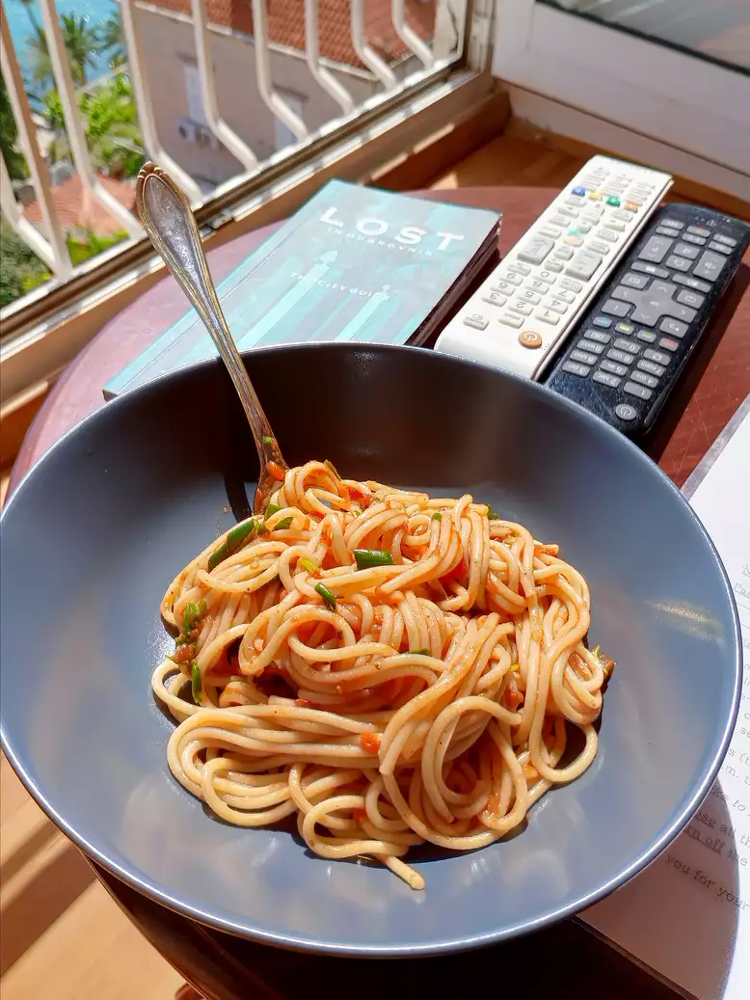

Spaghetti a la Philly

A really simple yet delicious meal!
Your favorite spaghetti sauce gets a delicious make over when combined with cream cheese and cooked ground beef. It's mixed with hot cooked spaghetti for an easy supper.
Ingredients
- 1 pound lean ground beef
- 1 (24 ounce) jar spaghetti sauce
- 4 ounces PHILADELPHIA Cream Cheese, cubed
- 8 ounces spaghetti, cooked and drained
- 2 tablespoons KRAFT Grated Parmesan Cheese
Steps
- COOK spaghetti as directed on package.
- MEANWHILE, brown meat in large skillet. Stir in sauce and cream cheese; cook on low heat 3 to 5 min. or until sauce is well blended and heated through, stirring frequently.
- DRAIN spaghetti. Add to sauce; mix lightly. Place on platter; top with Parmesan.